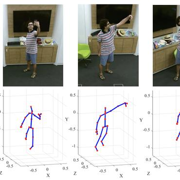

Human Activity Recognition (HAR) using AI is vital for applications like surveillance, healthcare, and sports, enhancing public safety and automation. This project leverages deep learning and computer vision to develop a robust real-time system for recognizing human actions in surveillance footage. Using datasets like Weizmann for initial training, the model is enhanced through data augmentation with multi-action scenarios. The architecture combines CNN for feature extraction, LSTM for temporal action understanding, and pose estimation for improved accuracy. To optimize real-time performance, lightweight neural networks and GPU acceleration are employed, ensuring high accuracy, low latency, and robustness in dynamic environments through rigorous benchmark testing.
